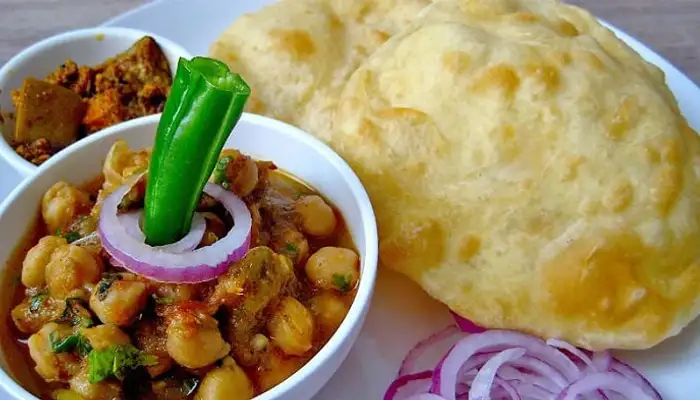
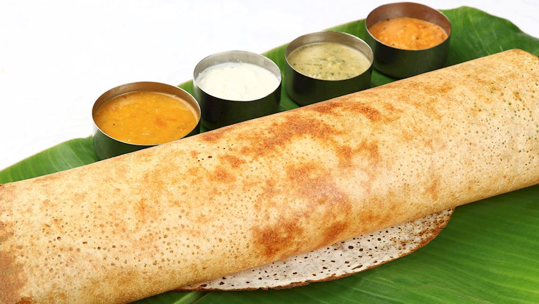
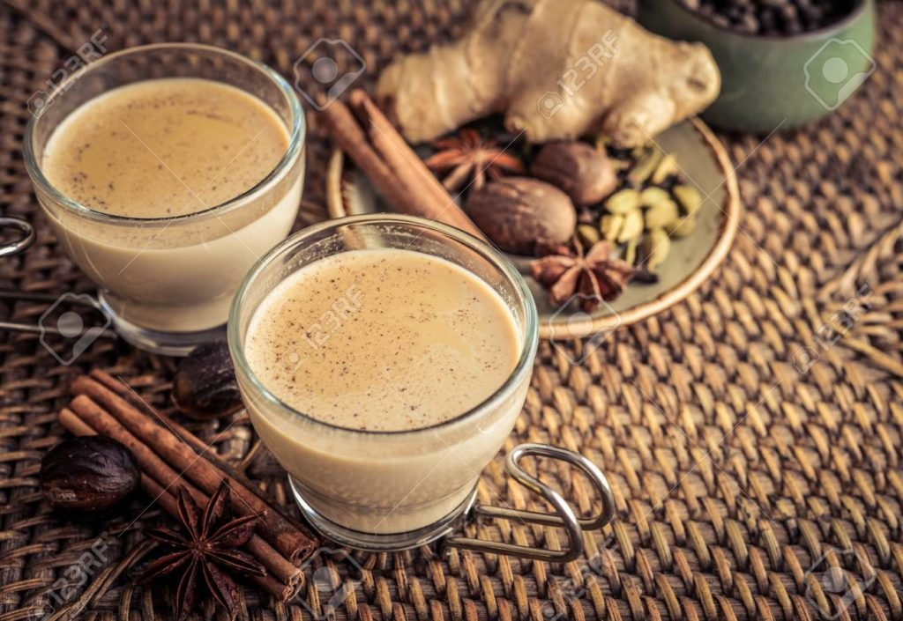
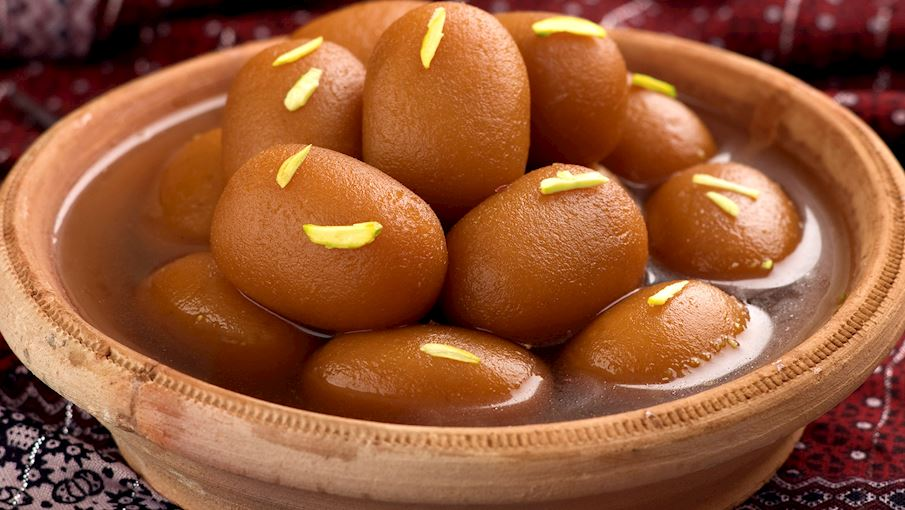
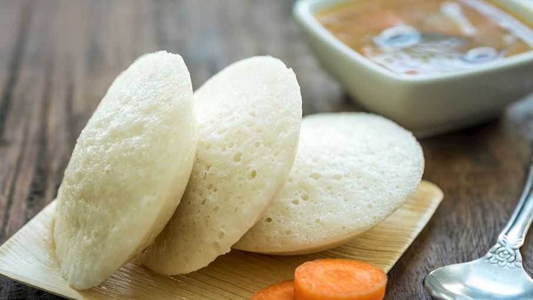
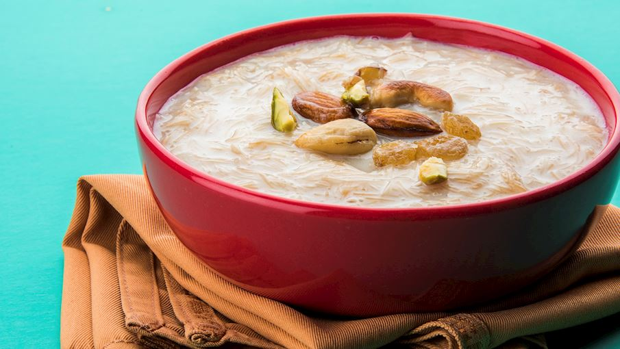
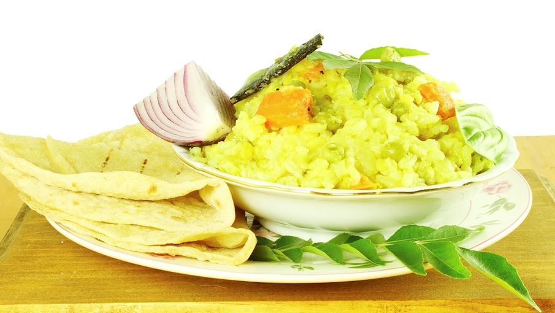
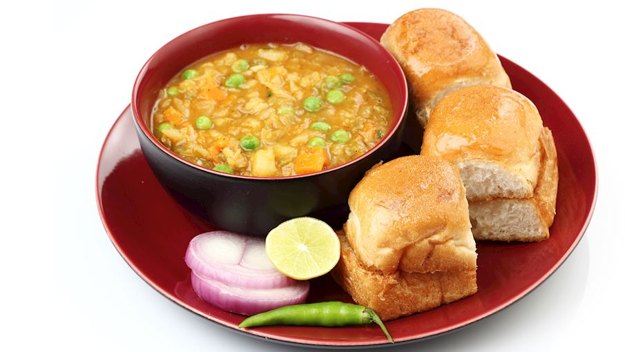
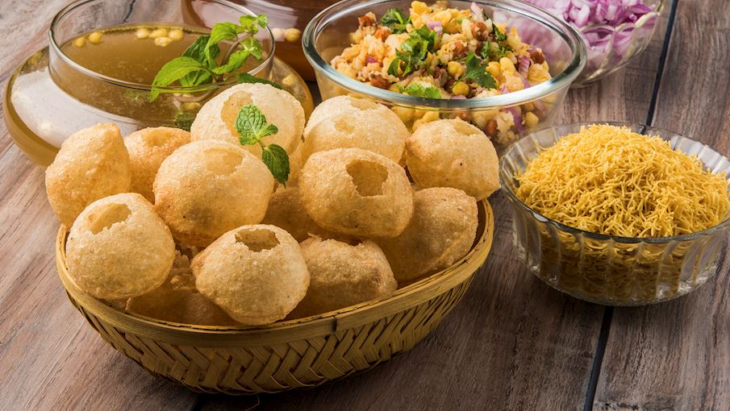
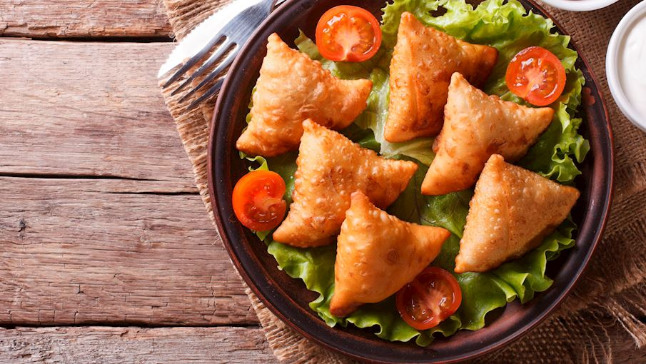

Indian cuisine consists of a variety of regional and traditional cuisines native to the Indian subcontinent.
Given the
diversity in soil, climate, culture, ethnic groups, and occupations, these cuisines vary substantially and use
locally
available spices, herbs, vegetables, and fruits.
Indian food is also heavily influenced by religion, in particular Hinduism and Islam, cultural choices and
traditions.
Indian cuisine has shaped the history of international relations; the spice trade between India and Europe was
the
primary catalyst for Europe's Age of Discovery. Spices were bought from India and traded around Europe and Asia.
Indian cuisine has influenced other cuisines across the world, especially those from Europe (especially
Britain), the
Middle East, Southern African, East Africa, Southeast Asia, North America, Mauritius, Fiji, Oceania, and the
Caribbean
Popular Cuisines Of India

Chole Bhature
Chole bhature is popular dish in the Indian subcontinent.It is a
combination of chana masala and a fried bread made from maida.

Dosa
A traditional southern Indian dish made from a batter of soaked
rice and lentils and baked into a thin pancake .

Masala Chai
Masala chai is a tea beverage made by boiling black tea in milk and water with a
mixture of aromatic herbs and spices.

Gulab Jamun
Gulab jamun is a dessert based on milk solids that are kneaded into a dough, shaped into balls, and deep-fried in ghee

Idli
Idli is a popular breakfast item in numerous South Indian households,it is made by steaming a batter of fermented lentils and rice.

Kheer
Kheer is made by boiling rice,with milk and sugar, and it can be additionally flavored with dried
fruits, nuts, and saffron.

Khichdi
Khichdi consists of rice and lentils and is widely consumed comfort food throughout the Indian subcontinent

Pav Bhaji
It consists of a vegetable curry that is typically served with a soft bread roll known as pav.

Pani Puri
It consists of a hollow puri that is fried until crispy, then stuffed with a combination of flavored
water called pani.

Samosa
These deep-fried, triangular pastries are filled with a variety of ingredients such as
onions, lentils, spiced potatoes, peas, or ground meat.